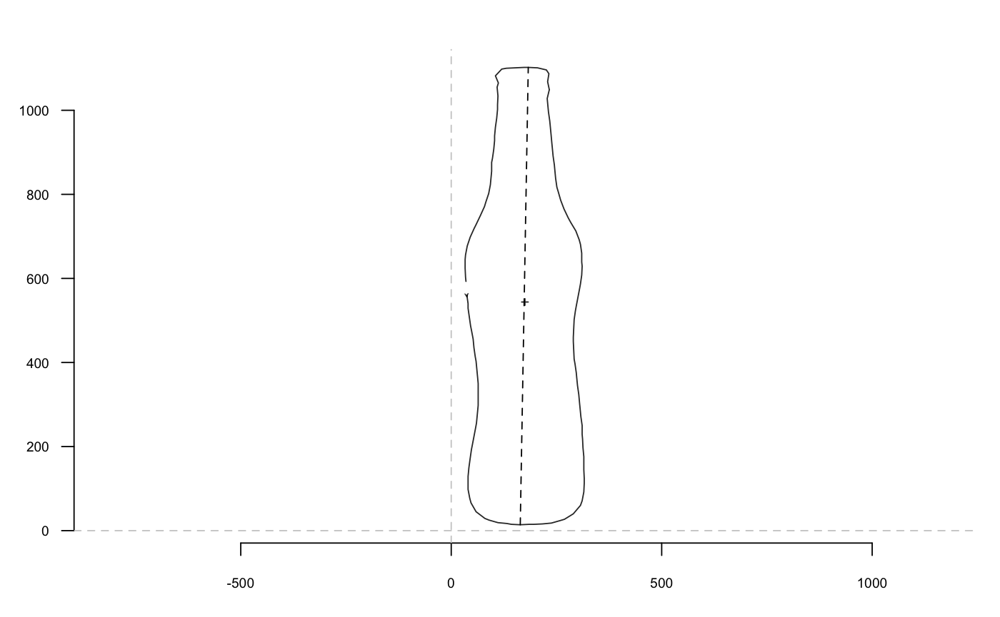

Also called the Feret's diameter, the longest distance between two points of the shape provided.
coo_calliper(coo, arr.ind = FALSE)
| coo | a |
|---|---|
| arr.ind |
|
numeric, the centroid size. If arr.ind=TRUE, a data_frame.
Other coo_ utilities: coo_aligncalliper,
coo_alignminradius,
coo_alignxax, coo_align,
coo_baseline, coo_bookstein,
coo_boundingbox,
coo_centdist, coo_center,
coo_centpos, coo_close,
coo_down, coo_dxy,
coo_extract, coo_flipx,
coo_force2close,
coo_interpolate,
coo_is_closed, coo_jitter,
coo_left,
coo_likely_clockwise, coo_nb,
coo_perim, coo_range,
coo_rev, coo_right,
coo_rotatecenter, coo_rotate,
coo_sample_prop,
coo_samplerr, coo_sample,
coo_scale, coo_shearx,
coo_slice,
coo_slidedirection,
coo_slidegap, coo_slide,
coo_smoothcurve, coo_smooth,
coo_template, coo_trans,
coo_trimbottom, coo_trimtop,
coo_trim, coo_up,
is_equallyspacedradii
b <- bot[1] coo_calliper(b)#> [1] 1088.166p <- coo_calliper(b, arr.ind=TRUE) p#> # A tibble: 1 x 2 #> length arr_ind #> <dbl> <list> #> 1 1088. <dbl [2]>p$length#> [1] 1088.166segments(b[ids[1], 1], b[ids[1], 2], b[ids[2], 1], b[ids[2], 2], lty=2)#> $brahma #> [1] 1087.768 #> #> $caney #> [1] 992.2107 #> #> $chimay #> [1] 644.5991 #> #> $corona #> [1] 806.6778 #> #> $deusventrue #> [1] 880.8053 #> #> $duvel #> [1] 606.7462 #> #> $franziskaner #> [1] 863.4501 #> #> $grimbergen #> [1] 766.5801 #> #> $guiness #> [1] 743.6162 #> #> $hoegardeen #> [1] 1046.608 #> #> $jupiler #> [1] 981.2747 #> #> $kingfisher #> [1] 717.4761 #> #> $latrappe #> [1] 746.2345 #> #> $lindemanskriek #> [1] 819.0562 #> #> $nicechouffe #> [1] 686.7001 #> #> $pecheresse #> [1] 927.4034 #> #> $sierranevada #> [1] 655.6706 #> #> $tanglefoot #> [1] 690.334 #> #> $tauro #> [1] 983.9842 #> #> $westmalle #> [1] 765.7114 #> #> $amrut #> [1] 864.1209 #> #> $ballantines #> [1] 711.5118 #> #> $bushmills #> [1] 882.1485 #> #> $chivas #> [1] 794.3198 #> #> $dalmore #> [1] 683.668 #> #> $famousgrouse #> [1] 607.8199 #> #> $glendronach #> [1] 821.1796 #> #> $glenmorangie #> [1] 986.0183 #> #> $highlandpark #> [1] 705.139 #> #> $jackdaniels #> [1] 798.2042 #> #> $jb #> [1] 1011.163 #> #> $johnniewalker #> [1] 337.8772 #> #> $magallan #> [1] 756.595 #> #> $makersmark #> [1] 858.3298 #> #> $oban #> [1] 858.7974 #> #> $oldpotrero #> [1] 596.5668 #> #> $redbreast #> [1] 425.3011 #> #> $tamdhu #> [1] 1007.425 #> #> $wildturkey #> [1] 1099.426 #> #> $yoichi #> [1] 714.077 #>#> # A tibble: 40 x 2 #> length arr_ind #> * <dbl> <list> #> 1 1088. <dbl [2]> #> 2 992. <dbl [2]> #> 3 645. <dbl [2]> #> 4 807. <dbl [2]> #> 5 881. <dbl [2]> #> 6 607. <dbl [2]> #> 7 863. <dbl [2]> #> 8 767. <dbl [2]> #> 9 744. <dbl [2]> #> 10 1047. <dbl [2]> #> # ... with 30 more rows